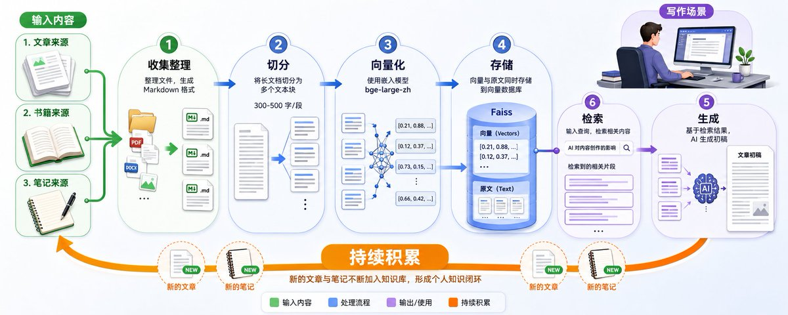
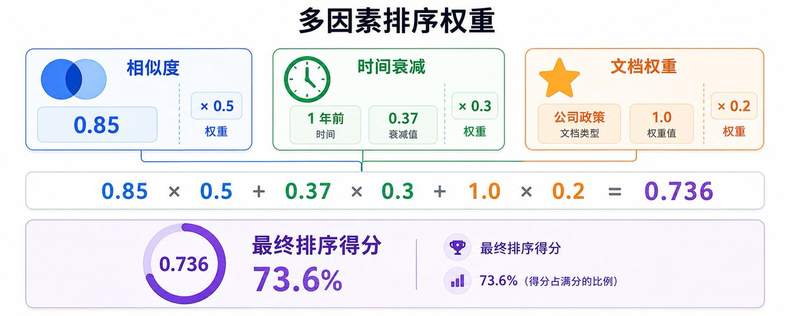
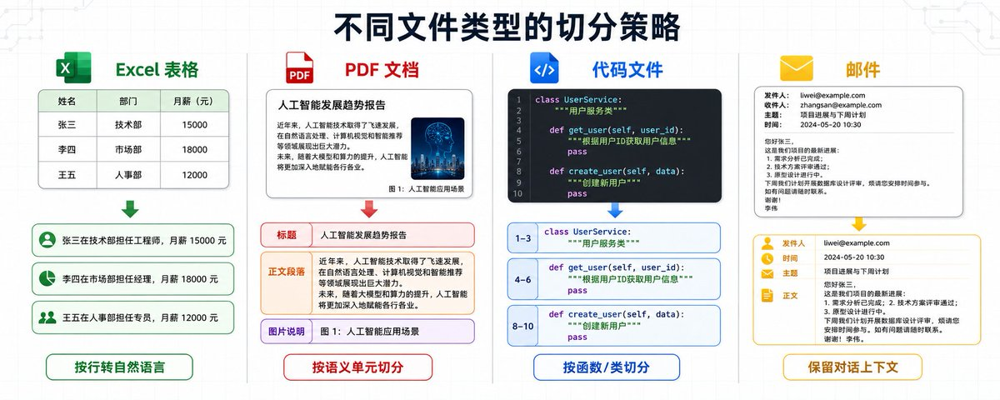
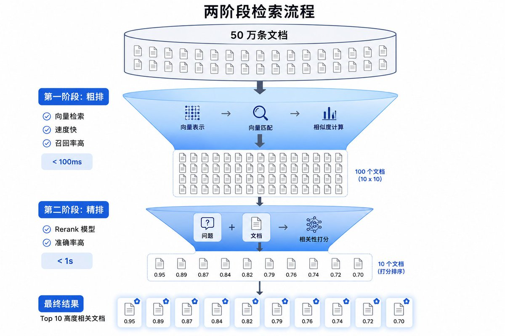

今年 1 月开始接企业知识库项目。
第一单，帮一家 200 人的公司搭知识库，干了 3 周，收费 8 万。
第二单，优化另一家公司的 RAG 系统，干了 1 周 多，收了 5 万。
这就是用 AI 变现的正确姿势，不卖课，不做中转站。
只要掌握企业级 RAG 技术，每个月花 20-30 小时接 2-3 个项目，月入 5 万，轻轻松松。
这篇文章记录我怎么把基础 RAG 改成企业级 RAG 的，最后也分享下如何构建个人的知识库。
第一章：RAG 和 Embedding 是什么
RAG = Retrieval-Augmented Generation = 检索增强生成。
传统方式下，你问 AI 问题，AI 只能根据训练时的知识回答。如果是新的信息，AI 不知道。RAG 的方式是，你问 AI 问题，AI 先去知识库里找相关文档，然后根据文档回答。核心区别在于，传统方式 AI 的知识是固定的，RAG 方式 AI 可以实时查询最新的文档。
完整流程分为五步：用户问问题 → 系统去知识库里找相关文档 → 把文档给 AI → AI 根据文档生成答案。
Embedding 就是把文字变成数字。计算机不认字，只认数字。你要让 AI 知道「苹果」和「水果」很像，就得把它们都变成数字，然后算距离。用 Embedding 模型，把文字变成一串数字（向量），比如「苹果」可能变成 [0.2, 0.8, 0.3, ...]，这串数字有 1024 个或 1536 个。这样可以算相似度，「苹果」的向量和「水果」的向量很接近，「苹果」的向量和「电脑」的向量就很远。
整个 RAG 系统的工作原理是：把所有文档切成小段，用 Embedding 模型把每段文字变成向量，把向量存到向量数据库里。用户问问题时，把问题也变成向量，然后在数据库里找最相似的文档，把找到的文档和问题一起给 AI，AI 生成答案。

第二章：企业级 RAG 需要什么 - 数据层面
基础 RAG 对个人用户够了，但对企业用户不够。企业要求准确率高、稳定性好。数据层面要解决三个核心问题：文档怎么切分、怎么向量化、怎么选数据库。
2.1 文档切分：不同文件类型的处理策略
简单的滑动窗口切分在企业场景下完全不够用。企业的文档类型复杂，Excel、PDF、Word、PPT、代码文件、邮件、聊天记录，每种文件的结构完全不同，需要针对性处理。
Excel 表格的处理：
Excel 不能按行切分，因为单独一行没有意义。正确的做法是识别表格的语义结构，把每一行转换成完整的自然语言描述。比如员工信息表，「张三 | 技术部 | 工程师 | 15000」要转换成「张三在技术部担任工程师，月薪 15000 元」。如果表格有多个 sheet，每个 sheet 要单独处理，并且保留 sheet 名称作为上下文。
更复杂的情况是，Excel 里可能有合并单元格、多级表头、嵌套表格。这时候需要先解析表格结构，识别出主表头、子表头、数据行，然后按照层级关系拼接成自然语言。比如财务报表，「2023 年 Q1 | 收入 | 产品 A | 100 万」要转换成「2023 年第一季度产品 A 的收入为 100 万元」。
PDF 文档的处理：
PDF 分三种：纯文本 PDF、扫描版 PDF、混合 PDF。纯文本 PDF 可以直接提取文字，但要注意保留段落结构，不能把所有文字连成一串。扫描版 PDF 需要 OCR 识别，识别完了要做后处理纠错，因为 OCR 的准确率不是 100%。混合 PDF 既有文字又有图片，文字部分直接提取，图片部分要么 OCR，要么用多模态模型生成描述。
PDF 的切分不能简单按页切，因为一页可能包含多个主题。正确的做法是先识别文档结构（标题、段落、列表、表格），然后按照语义单元切分。比如技术文档，一个配置项的说明可能跨越两页，你不能把它切成两段，要保持完整性。
Word 和 PPT 的处理：
Word 和 PPT 有格式信息（标题、加粗、列表），这些格式代表了内容的重要性。去掉格式，AI 就不知道哪些是重点。正确的做法是保留格式信息，用 Markdown 语法表示。比如「重要提示：本产品不适用于孕妇」，保留加粗标记，AI 才知道这是重点。
PPT 的切分要按照幻灯片的逻辑结构来，一张幻灯片通常是一个完整的观点，不要把它切碎。如果一张幻灯片内容太多，可以按照标题和正文分开处理，但要保留幻灯片编号作为上下文。
代码文件的处理：
代码文件不能按行切分，因为代码的语义单元是函数、类、模块。正确的做法是用 AST（抽象语法树）解析代码结构，按照函数、类、模块切分。每个函数要保留函数签名、注释、函数体，这样 AI 才能理解这个函数是干什么的。
如果代码文件很大，一个类有几百行，可以按照方法切分，但要保留类名和类注释作为上下文。比如「UserService 类的 login 方法」，要包含类名、方法签名、方法注释、方法体。
邮件和聊天记录的处理：
邮件和聊天记录有时间线和对话结构。邮件要保留发件人、收件人、主题、时间、正文，这些都是重要的上下文信息。聊天记录要保留对话的上下文，不能把每条消息单独切分，要按照对话轮次切分。比如一个问题和三条回复，要作为一个完整的对话单元。
切分的多种策略：
切分不是简单的按字数切，而是要根据文档的结构和语义来切。常见的切分策略有以下几种：
按段落切分。这是最常见的方式，一个自然段作为一个 chunk。适合结构清晰的文档，比如新闻稿、博客文章。但要注意，有些段落很长，可能超过 Embedding 模型的输入限制，需要进一步切分。
按标题层级切分。识别文档的标题结构（一级标题、二级标题、三级标题），按照标题层级切分。一个二级标题下的所有内容作为一个 chunk。这种方式适合结构化的文档，比如技术文档、产品手册。切分后要保留标题信息作为上下文，让 AI 知道这段内容属于哪个章节。
按语义单元切分。用 NLP 模型识别文档的语义边界，在语义发生转换的地方切分。比如一段话讲完了配置方法，下一段话开始讲注意事项，这就是一个语义边界。这种方式最精准，但实现成本高，需要训练或使用语义分割模型。
按完整观点切分。识别文档中的完整观点或论述单元，一个完整的观点作为一个 chunk。比如「RAG 的优势有三点：第一，可以实时更新知识；第二，可以引用来源；第三，可以降低幻觉」，这是一个完整的观点，不能切碎。这种方式适合观点性的文档，比如分析报告、评论文章。
按固定窗口切分（滑动窗口）。设定一个固定的窗口大小（比如 500 字），每次滑动一定的步长（比如 400 字），切出一个新的 chunk。窗口大小减去步长就是重叠部分（比如 100 字）。这种方式最简单，但可能会把一个完整的观点切碎。只适合作为兜底方案，当其他方式都不适用时使用。
通用的切分原则：
不管用哪种切分策略，核心原则是保持语义完整性。一个完整的观点、一个完整的配置项、一个完整的对话，不能被切碎。同时要保留足够的上下文信息，让 AI 知道这段内容是在什么场景下的。
切分的粒度要根据文档类型动态调整。技术文档可以切得细一些，每个配置项单独一段。政策文档要切得粗一些，一个完整的政策条款作为一段。代码文件按照函数切分，邮件按照邮件线程切分。
实际操作中，往往需要组合多种切分策略。先按标题层级做粗切分，再按段落做细切分，最后用滑动窗口处理超长段落。切分完了要检查每个 chunk 的长度，确保在 Embedding 模型的输入限制内。

2.2 向量化：模型选择和输入处理
向量化的核心是选对模型和控制输入长度。Embedding 模型是在特定语言的数据上训练的，用英文模型处理中文，效果会很差。中文场景下，bge-large-zh 是目前效果最好的开源模型，维度是 1024。英文场景下，OpenAI 的 text-embedding-3-large 效果最好，维度是 1536。如果是多语言混合的场景，用 multilingual-e5-large。
向量维度是固定的，输入越长，信息密度越低。输入 1 个字，1536 维表达 1 个字的信息，信息密度很低。输入 1 万字，1536 维表达 1 万字的信息，信息被压缩，细节丢失。就像你用一个 1MB 的 U 盘去装 1GB 的电影，要么装不下，要么画质糊成马赛克。
所以要控制输入长度。bge-large-zh 的最大输入是 512 Token（约 400 字），推荐输入 300-400 字。text-embedding-3-large 的最大输入是 8191 Token（约 6000 字），但推荐输入 500-1000 字，因为输入太长会导致信息密度下降。
实际操作中，切分后的每个 chunk 要控制在推荐长度内。如果某个 chunk 超长，要进一步切分。但不能切得太碎，要保持语义完整性。这是一个平衡的过程，需要根据实际效果调整。
图片和图表的向量化：
企业文档里有大量的图片和图表，这些视觉信息也需要向量化。纯文本的 Embedding 模型处理不了图片，需要用多模态的方法。
第一种方法是 OCR + 文本 Embedding。用 OCR 把图片里的文字识别出来，然后用文本 Embedding 模型向量化。这种方法适合图片里主要是文字的场景，比如截图、扫描件。但 OCR 只能识别文字，识别不了图表的结构和含义。
第二种方法是多模态视觉 Embedding 模型。这类模型可以直接把图片变成向量，不需要先转成文字。OpenAI 的 CLIP 模型就是这类模型，可以把图片和文字映射到同一个向量空间。用户问「销售额趋势图」，系统可以直接检索出相关的图表。
第三种方法是图片描述 + 文本 Embedding。用多模态 LLM（比如 GPT-4V）给图片生成文字描述，然后用文本 Embedding 模型向量化。这种方法的好处是，描述可以包含图片的语义信息，比如「这是一张柱状图，显示了 2023 年各季度的销售额，Q4 的销售额最高」。
实际操作中，这三种方法可以结合使用。对于包含文字的图片，用 OCR 提取文字。对于图表，用多模态 LLM 生成描述。对于需要精确检索的场景，用多模态视觉 Embedding 模型。把 OCR 结果、图片描述、图片向量都存起来，检索的时候可以多路召回，提高召回率。
2.3 向量数据库选型
向量数据库的选择取决于三个因素：数据量、是否需要实时更新、成本。
数据量在 10 万条以内，用 Faiss 就够了。Faiss 是 Facebook 开源的向量检索库，本地部署，免费，性能很好。但 Faiss 不支持实时更新，只能离线建索引，适合数据不经常变化的场景。
数据量在 10 万到 100 万条，用 Milvus 或 Qdrant。这两个都是开源的向量数据库，支持实时插入和删除，支持分布式部署。Milvus 的社区更活跃，文档更完善，生态更好。Qdrant 的性能更好，但社区相对小一些。
数据量超过 100 万条，用 Pinecone 或 Weaviate。Pinecone 是商业产品，托管服务，不用自己部署，性能很好，但要付费。Weaviate 是开源的，支持超大规模数据，但需要自己部署和运维。
我的场景是 10 万条数据，需要实时更新，预算有限，所以选了 Milvus。
索引类型的选择也很重要。Milvus 支持多种索引类型，IVF_FLAT 适合中小规模，准确率高。IVF_SQ8 适合大规模，速度快但准确率略低。HNSW 适合超大规模，速度最快。我用的是 IVF_FLAT，因为我的数据量不大，更看重准确率。
第三章：企业级 RAG 需要什么 - 检索策略
数据搞定了，只是成功了 80%。剩下 20% 在检索策略上。检索策略要解决四个核心问题：长问题怎么处理、怎么提高召回率、怎么提高准确率、怎么做综合排序。
3.1 长问题的处理：压缩和改写
用户输入 1000 字的需求文档，问「这个需求怎么实现」。Embedding 模型只能处理 500 字，超出部分被截断，信息丢失。这时候需要对问题进行预处理。
第一种方法是压缩。用 LLM 把 1000 字总结成 500 字，保留核心信息，去掉冗余内容。但压缩有风险，可能会丢失关键细节。所以压缩的时候要明确告诉 LLM，哪些信息是必须保留的。
第二种方法是改写成多个子问题。把一个大问题拆成 3-5 个小问题，每个小问题单独检索，最后合并结果。比如「我们要做一个电商平台，需要支持多商户、多语言、多货币，怎么实现？」可以拆成三个子问题：「电商平台怎么支持多商户？」「电商平台怎么支持多语言？」「电商平台怎么支持多货币？」
改写的好处是可以提高召回率。一个大问题可能只召回 10 条文档，但 3 个小问题可以召回 30 条文档（去重后可能 20 条）。就像散弹枪，一枪打出去，覆盖面更广。
实际操作中，压缩和改写可以结合使用。先判断问题的长度，如果超过 500 字，先压缩到 500 字以内。如果问题包含多个子问题，再拆分成多个子问题。
3.2 召回率优化：粗排和精排
召回率的核心问题是，如果你只召回 Top-10，可能把真正相关的文档排在第 15 名，就漏掉了。但如果你召回 Top-100，大部分都是噪音，AI 看不过来。
解决方案是两阶段检索：粗排和精排。
粗排阶段用向量检索，快速召回 Top-100。向量检索的速度很快，对 50 万条文档做检索，耗时不到 100 毫秒。粗排的目标是「不漏」，把可能相关的都找出来，宁可多召回一些，也不能漏掉关键信息。
精排阶段用 Rerank 模型，对这 100 条重新打分，返回 Top-10。Rerank 模型的速度很慢，对 50 万条文档做 Rerank，耗时超过 30 分钟。但对 100 条文档做 Rerank，耗时不到 1 秒。精排的目标是「准确」，把真正相关的挑出来。
粗排和精排的组合，既保证了召回率，又保证了准确率，还保证了速度。
3.3 准确率优化：Rerank 模型的使用
向量检索是「模糊匹配」，只要文档里出现「报销」「申请」这些词，就会被召回。但大部分文档内容无关。比如用户问「怎么申请报销」，系统召回了「报销流程」「报销政策」「报销表格」「报销系统」，但真正有用的只有「报销流程」。
Rerank 模型和 Embedding 模型的工作原理完全不同。Embedding 模型只看文本本身，把文本变成向量，然后算向量之间的距离。Rerank 模型把问题和文档一起输入，直接判断相关性，输出一个 0 到 1 之间的分数。
举个例子，问题是「怎么申请报销」，文档 1 是「报销流程：先填写报销单，然后提交给财务部审核」，文档 2 是「公司年假政策：员工每年有 10 天年假，其中 5 天必须在上半年使用」。
Embedding 模型可能觉得文档 2 也相关，因为都提到了「公司」「政策」这些词。但 Rerank 模型会判断文档 1 的相关性是 0.95，文档 2 的相关性是 0.1，明显文档 1 更相关。
中文场景下，bge-reranker-large 是目前效果最好的开源 Rerank 模型。英文场景下，Cohere 的 cohere-rerank 效果最好，但是商业产品，要付费。
3.4 综合排序：多因素加权
单纯的相似度排序有一个问题，可能把旧文档排在前面。用户问「公司年假政策是什么」，检索出来的是 3 年前的旧文档，但公司的年假政策可能已经改了。
解决方案是多因素排序，不只看相似度，还要考虑时间、权重、其他评分。
最终得分的计算公式是：最终得分 = 相似度 × 0.5 + 时间衰减 × 0.3 + 权重 × 0.2
时间衰减的计算方式是，越新的文档，得分越高。今天的文档，时间衰减 = 1.0。1 年前的文档，时间衰减 = 0.37。3 年前的文档，时间衰减 = 0.05。具体的衰减函数可以用指数衰减，也可以用线性衰减，根据实际情况调整。
权重是人工标注的重要性。「公司政策」类的文档权重设为 1.0，「会议纪要」类的文档权重设为 0.3。权重的设置需要根据业务场景来定，不同类型的文档重要性不同。
除了相似度、时间、权重，还可以加入其他评分因素。比如用一个分类模型，判断文档是不是真的在回答这个问题，输出一个 0 到 1 的分数。或者用一个 LLM，让它给每个文档打分，判断文档的质量和相关性。
多因素排序的权重系数（0.5、0.3、0.2）需要根据实际效果调整。如果发现时效性很重要，可以把时间衰减的权重调高。如果发现文档质量参差不齐，可以加入质量评分，并且给它一个较高的权重。
实际操作中，多因素排序是一个持续优化的过程。上线后要收集用户反馈，看哪些文档被点击了，哪些文档被忽略了，根据反馈调整权重系数。

3.5 混合检索：向量检索 + 关键词检索
单纯的向量检索有时候会漏掉一些精确匹配的结果。比如用户问「员工编号 E12345 的信息」，向量检索可能检索不到，因为编号是精确匹配，不是语义相似。
解决方案是混合检索，同时用向量检索和关键词检索，然后合并结果。向量检索负责语义相似的文档，关键词检索负责精确匹配的文档。
关键词检索可以用 Elasticsearch 或者传统的全文检索引擎。检索的时候，向量检索召回 Top-50，关键词检索召回 Top-50，合并去重后得到 Top-80，再用 Rerank 模型精排到 Top-10。
混合检索的权重分配也很重要。如果用户的问题包含专有名词、编号、日期这些精确信息，关键词检索的权重要高一些。如果用户的问题是语义性的，向量检索的权重要高一些。可以用一个分类模型判断问题的类型，动态调整权重。
3.6 查询扩展：同义词和相关词
用户的问题可能用词不准确，导致检索不到相关文档。比如用户问「怎么请假」，但文档里用的是「休假申请流程」，向量检索可能检索不到。
解决方案是查询扩展，把用户的问题扩展成多个相关的表达方式。「怎么请假」可以扩展成「请假流程」「休假申请」「假期申请」「请假手续」。每个表达方式单独检索，然后合并结果。
查询扩展可以用同义词词典，也可以用 LLM 生成。用 LLM 的好处是可以生成更多样化的表达方式，不局限于同义词。但要注意控制扩展的数量，扩展太多会增加检索时间，也会引入噪音。
3.7 负反馈学习：从用户行为中学习
用户的点击行为、停留时间、反馈评分，都是宝贵的信号。如果一个文档被检索出来了，但用户没有点击，说明这个文档可能不相关。如果用户点击了但很快关闭，说明文档的内容不符合预期。
可以收集这些负反馈信号，用来优化检索模型。比如用户问「怎么申请报销」，系统返回了文档 A、B、C，用户只点击了 A，没有点击 B 和 C。下次再有类似的问题，B 和 C 的排序就应该降低。
负反馈学习可以用点击率模型（CTR）或者学习排序模型（Learning to Rank）。这些模型可以从用户行为中学习，不断优化检索结果的排序。
第四章：个人用户怎么做 - 内容创作场景
企业级 RAG 很复杂，但对个人用户来说，RAG 可以很简单，而且非常实用。
最常见的场景是内容创作。你写了很多文章、读了很多书、收藏了很多资料，这些都是你的知识资产。但时间久了，你记不清哪篇文章讲了什么，哪本书有什么观点。每次写作的时候，要翻很久才能找到相关的素材。
用 RAG 可以解决这个问题。把你的文章、书籍、笔记都做成向量数据库，存在本地。写作的时候，直接检索相关内容，AI 帮你找出相关的素材，甚至直接生成初稿。
4.1 怎么构建个人知识库
第一步是收集内容。把你的文章、书籍、笔记、收藏的网页，都整理成文本文件。Markdown 格式最好，因为保留了格式信息，而且方便处理。
第二步是切分和向量化。个人知识库的数据量不大，几千到几万条，用简单的切分方式就够了。按段落切分，每段 300-500 字。用开源的 Embedding 模型，比如 bge-large-zh，把每段文字变成向量。
第三步是存储。个人知识库用 Faiss 就够了，本地部署，免费，速度快。把向量和原文都存起来，建立索引。
第四步是检索。写作的时候，输入你想写的主题或者问题，系统检索出相关的段落，返回给你。你可以直接引用，也可以让 AI 基于这些素材生成初稿。
4.2 怎么设计 Prompt 去检索
检索的关键在于 Prompt 的设计。你不是在问 AI 问题，而是在告诉 AI 你想找什么样的内容。
场景 1：找相关素材
你在写一篇关于「AI 对内容创作的影响」的文章，想找相关的素材。
Prompt 可以这样写：
我在写一篇关于「AI 对内容创作的影响」的文章。
请从我的知识库中检索相关的内容，包括：
1. AI 工具在内容创作中的应用案例
2. AI 对创作者的影响（正面和负面）
3. 未来内容创作的趋势
返回最相关的 10 段内容。这样 AI 知道你要找什么，检索的时候会更精准。
场景 2：生成初稿
你想写一篇文章，但不知道从哪里开始。
Prompt 可以这样写：
我想写一篇关于「个人知识管理」的文章。
请从我的知识库中检索相关的内容，然后生成一个 800 字的初稿。
初稿要求：
1. 包含我之前写过的观点和案例
2. 结构清晰，有开头、正文、结尾
3. 引用我的原文时，标注来源
检索范围：我的所有文章和笔记。AI 会先检索相关内容，然后基于这些内容生成初稿。生成的初稿会引用你之前的观点，保持你的写作风格。
场景 3：找具体的信息
你记得之前读过一本书，讲了某个概念，但忘了是哪本书。
Prompt 可以这样写：
我记得之前读过一个概念，叫「认知负荷」，是关于学习和记忆的。
请从我的读书笔记中检索相关的内容，告诉我：
1. 这个概念出自哪本书
2. 具体的定义是什么
3. 有哪些应用场景
返回最相关的 5 段内容。AI 会检索出相关的读书笔记，告诉你这个概念的出处和详细信息。
4.3 为什么这样做很有价值
个人知识库的价值在于，它把你的知识资产变成了可检索、可复用的资源。
第一，节省时间。
以前写作要翻很久才能找到素材，现在几秒钟就能检索出来。以前要重新阅读整本书才能找到某个观点，现在直接检索就能找到。
第二，减少 Token 消耗。
如果你每次写作都把所有文章和笔记都给 AI，Token 消耗会很大。用 RAG 的方式，只检索相关的内容，Token 消耗大幅降低。比如你有 100 篇文章，每篇 2000 字，总共 20 万字。如果全部给 AI，需要 20 万 Token。用 RAG 检索，只返回 10 段相关内容，每段 500 字，只需要 5000 Token。
第三，保持一致性。
你的文章、笔记、观点，都是你的思考积累。用 RAG 的方式，AI 生成的内容会基于你的知识库，保持你的观点和风格。不会出现 AI 生成的内容和你之前的观点矛盾的情况。
第四，持续积累。
每次写完文章，加入知识库。每次读完书，加入读书笔记。知识库会越来越丰富，检索的效果会越来越好。这是一个正向循环，你的知识资产会不断增值。

4.4 实际操作建议
个人知识库不需要很复杂，简单实用就好。
数据量小，用 Faiss 本地部署。不需要服务器，不需要付费，在自己电脑上就能跑。
切分简单，按段落切就行。不需要复杂的语义切分，不需要识别文档结构。
检索简单，用向量检索就够了。不需要 Rerank，不需要多因素排序。数据量小，Top-10 的结果基本都是相关的。
Prompt 设计是关键。要明确告诉 AI 你想找什么，检索范围是什么，返回什么格式。Prompt 设计得好，检索效果就好。
定期更新知识库。每次写完文章，读完书，做完笔记，都加入知识库。保持知识库的新鲜度，检索的时候才能找到最新的内容。
总结
企业级 RAG 和基础 RAG 的核心区别在于，企业级 RAG 要处理复杂的数据类型，要保证高召回率和高准确率，要考虑时效性和文档质量。
数据层面，不同文件类型要用不同的切分策略。Excel 要转换成自然语言，PDF 要识别文档结构，代码要按照函数切分，邮件要保留对话上下文。向量化要选对语言的模型，控制输入长度。数据库要根据数据量和实时性需求选择。
检索层面，长问题要压缩或改写成多个子问题。召回率要用粗排和精排的两阶段检索。准确率要用 Rerank 模型重新打分。排序要综合考虑相似度、时间、权重、其他评分因素。
搞定数据和检索这两个层面，你的 RAG 就能达到企业级的要求。
今年1月から企業のナレッジベース案件を受注し始めました。
1件目は、200人規模の会社のナレッジベース構築を3週間かけて行い、8万元を請求。
2件目は、別の会社のRAGシステム最適化を1週間強で行い、5万元を受領。
これこそがAIで収益化する正しい方法です。講座販売でもなければ、転売でもない。
エンタープライズ級のRAG技術を習得すれば、毎月20〜30時間をかけて2〜3件のプロジェクトを受注するだけで、月収5万元は軽く達成できます。
この記事では、私がどのように基本RAGをエンタープライズ級RAGに改良したかを記録し、最後に個人ナレッジベースの構築方法も共有します。
第一章：RAGとEmbeddingとは何か
RAG = Retrieval-Augmented Generation = 検索拡張生成。
従来の方法では、AIに質問すると、AIは訓練時の知識に基づいてしか回答できません。新しい情報であれば、AIは知りません。RAGの方法では、AIに質問すると、AIはまずナレッジベースで関連ドキュメントを検索し、それからドキュメントに基づいて回答します。核心的な違いは、従来の方法ではAIの知識が固定されているのに対し、RAGではAIがリアルタイムに最新のドキュメントを検索できることです。
完全なフローは5つのステップに分かれます：ユーザーが質問 → システムがナレッジベースで関連ドキュメントを検索 → ドキュメントをAIに渡す → AIがドキュメントに基づいて回答を生成。
Embeddingとは、文字を数字に変換することです。コンピューターは文字を認識せず、数字だけを認識します。AIに「リンゴ」と「果物」が似ていることを知らせるには、両方を数字に変換して距離を計算する必要があります。Embeddingモデルを使って文字を数字の列（ベクトル）に変換します。例えば「リンゴ」は [0.2, 0.8, 0.3, ...] のようになり、この数字列は1024個または1536個あります。これで類似度を計算でき、「リンゴ」のベクトルと「果物」のベクトルは非常に近く、「リンゴ」のベクトルと「コンピューター」のベクトルは遠くなります。
RAGシステム全体の動作原理は：すべてのドキュメントを小さなセグメントに分割し、Embeddingモデルで各セグメントの文字をベクトルに変換し、ベクトルをベクトルデータベースに保存します。ユーザーが質問すると、質問もベクトルに変換し、データベースで最も類似したドキュメントを見つけ、見つかったドキュメントと質問を一緒にAIに渡して回答を生成します。
第二章：エンタープライズ級RAGに必要なもの - データレベル
基本RAGは個人ユーザーには十分ですが、企業ユーザーには不十分です。企業は高い精度と安定性を要求します。データレベルでは3つの核心的問題を解決する必要があります：ドキュメントの分割方法、ベクトル化の方法、データベースの選び方。
2.1 ドキュメント分割：異なるファイルタイプの処理戦略
単純なスライディングウィンドウ分割は、企業シナリオでは全く不十分です。企業のドキュメントは種類が複雑で、Excel、PDF、Word、PPT、コードファイル、メール、チャット履歴など、各ファイルの構造は全く異なり、それぞれに応じた処理が必要です。
Excel表の処理：
Excelは行単位で分割できません。単独の行には意味がないからです。正しい方法は、表の意味構造を認識し、各行を完全な自然言語記述に変換することです。例えば社員情報表の「張三 | 技術部 | エンジニア | 15000」は「張三は技術部でエンジニアを務め、月給は15000元」と変換します。表に複数のシートがある場合、各シートを個別に処理し、シート名をコンテキストとして保持します。
さらに複雑なケースでは、Excelに結合セル、多段ヘッダー、入れ子テーブルがある場合があります。この場合、まず表構造を解析し、メインヘッダー、サブヘッダー、データ行を識別してから、階層関係に従って自然言語に結合します。例えば財務諸表の「2023年 Q1 | 収入 | 製品A | 100万」は「2023年第1四半期の製品Aの収入は100万元」と変換します。
PDFドキュメントの処理：
PDFは3種類あります：純テキストPDF、スキャン版PDF、混合PDF。純テキストPDFは直接テキストを抽出できますが、段落構造を保持することに注意し、すべてのテキストを一続きにしてはいけません。スキャン版PDFはOCR認識が必要で、認識後に後処理による誤り訂正が必要です。OCRの精度は100%ではないからです。混合PDFはテキストと画像の両方を含み、テキスト部分は直接抽出し、画像部分はOCRかマルチモーダルモデルで説明を生成します。
PDFの分割は単純にページ単位で行えません。1ページに複数のトピックが含まれる可能性があるからです。正しい方法は、まずドキュメント構造（見出し、段落、リスト、表）を認識し、次に意味単位で分割することです。例えば技術ドキュメントでは、ある設定項目の説明が2ページにまたがる場合、それを2つに分割してはいけません。完全性を保つ必要があります。
WordとPPTの処理：
WordとPPTには書式情報（見出し、太字、リスト）があり、これらの書式は内容の重要性を表します。書式を除去すると、AIはどれが重要かわかりません。正しい方法は、書式情報を保持し、Markdown構文で表現することです。例えば「重要提示：本製品は妊婦には適しません」は太字マークを保持することで、AIがこれが重要だと認識します。
PPTの分割はスライドの論理構造に従う必要があり、1枚のスライドは通常1つの完全なポイントであり、バラバラにしてはいけません。1枚のスライドの内容が多すぎる場合は、タイトルと本文に分けて処理できますが、スライド番号をコンテキストとして保持する必要があります。
コードファイルの処理：
コードファイルは行単位で分割できません。コードの意味単位は関数、クラス、モジュールだからです。正しい方法は、AST（抽象構文木）を使ってコード構造を解析し、関数、クラス、モジュール単位で分割することです。各関数は、関数シグネチャ、コメント、関数本体を保持し、AIがその関数の役割を理解できるようにします。
コードファイルが大きく、1つのクラスが数百行ある場合、メソッド単位で分割できますが、クラス名とクラスコメントをコンテキストとして保持します。例えば「UserServiceクラスのloginメソッド」は、クラス名、メソッドシグネチャ、メソッドコメント、メソッド本体を含める必要があります。
メールとチャット履歴の処理：
メールとチャット履歴にはタイムラインと会話構造があります。メールは送信者、受信者、件名、時間、本文を保持する必要があり、これらはすべて重要なコンテキスト情報です。チャット履歴は会話のコンテキストを保持し、各メッセージを個別に分割するのではなく、会話ターン単位で分割します。例えば1つの質問と3つの返信は、1つの完全な会話ユニットとします。
分割の複数の戦略：
分割は単純な文字数による分割ではなく、ドキュメントの構造と意味に基づいて行う必要があります。一般的な分割戦略には以下のようなものがあります：
段落分割。これが最も一般的な方法で、1つの自然段落を1つのチャンクとします。構造が明確なドキュメント（ニュース記事、ブログ記事など）に適しています。ただし、一部の段落は非常に長く、Embeddingモデルの入力制限を超える可能性があり、さらに分割が必要です。
見出し階層分割。ドキュメントの見出し構造（第1レベル、第2レベル、第3レベルの見出し）を認識し、見出し階層に従って分割します。1つの第2レベル見出しの下のすべての内容を1つのチャンクとします。この方法は構造化されたドキュメント（技術ドキュメント、製品マニュアルなど）に適しています。分割後は見出し情報をコンテキストとして保持し、AIがその内容がどの章に属するかを把握できるようにします。
意味単位分割。NLPモデルを使ってドキュメントの意味境界を認識し、意味が変わる箇所で分割します。例えば、ある段落で設定方法の説明が終わり、次の段落で注意事項が始まったら、それが意味境界です。この方法が最も精密ですが、実装コストが高く、意味分割モデルの訓練や使用が必要です。
完全なポイント分割。ドキュメント内の完全なポイントや論述単位を認識し、1つの完全なポイントを1つのチャンクとします。例えば「RAGの利点は3つあります：第一に、知識をリアルタイム更新できること；第二に、出典を引用できること；第三に、ハルシネーションを低減できること」これは完全なポイントであり、バラバラにしてはいけません。この方法は論説的なドキュメント（分析レポート、評論記事など）に適しています。
固定ウィンドウ分割（スライディングウィンドウ）。固定のウィンドウサイズ（例：500文字）を設定し、毎回一定のステップ（例：400文字）でスライドさせて新しいチャンクを切り出します。ウィンドウサイズからステップを引いたものが重複部分（例：100文字）です。この方法が最も簡単ですが、完全なポイントをバラバラにする可能性があります。他の方法が適用できない場合の最終手段としてのみ適しています。
分割の一般原則：
どの分割戦略を使うにせよ、核心的原則は意味の完全性を保つことです。完全なポイント、完全な設定項目、完全な会話は、バラバラにしてはいけません。同時に、十分なコンテキスト情報を保持し、AIがその内容がどのようなシナリオのものかを把握できるようにします。
分割の粒度はドキュメントタイプに応じて動的に調整する必要があります。技術ドキュメントは細かく分割し、各設定項目を個別のセグメントにします。ポリシードキュメントは粗く分割し、完全なポリシー条項を1つのセグメントとします。コードファイルは関数単位で分割し、メールはメールスレッド単位で分割します。
実際の運用では、複数の分割戦略を組み合わせる必要があります。まず見出し階層で粗分割し、次に段落で細分割し、最後にスライディングウィンドウで超長段落を処理します。分割後は各チャンクの長さをチェックし、Embeddingモデルの入力制限内に収まっていることを確認します。
2.2 ベクトル化：モデル選択と入力処理
ベクトル化の核心は、適切なモデルを選び、入力長を制御することです。Embeddingモデルは特定の言語のデータで訓練されており、英語モデルで中国語を処理すると効果が非常に悪くなります。中国語のシナリオでは、bge-large-zhが現在最も効果の良いオープンソースモデルで、次元数は1024です。英語のシナリオでは、OpenAIのtext-embedding-3-largeが最も効果が良く、次元数は1536です。多言語混合のシナリオでは、multilingual-e5-largeを使用します。
ベクトル次元は固定されており、入力が長くなるほど情報密度は低下します。1文字を入力すると、1536次元で1文字の情報を表現するため、情報密度は非常に低くなります。1万文字を入力すると、1536次元で1万文字の情報を表現するため、情報は圧縮され、詳細が失われます。これは1MBのUSBメモリに1GBの映画を入れようとするようなもので、入りきらないか、画質がモザイク状になります。
そのため入力長を制御する必要があります。bge-large-zhの最大入力は512 Token（約400文字）で、推奨入力は300〜400文字です。text-embedding-3-largeの最大入力は8191 Token（約6000文字）ですが、推奨入力は500〜1000文字です。入力が長すぎると情報密度が低下するからです。
実際の運用では、分割後の各チャンクを推奨長内に制御します。あるチャンクが長すぎる場合は、さらに分割します。ただし、細かく切りすぎず、意味の完全性を保つ必要があります。これはバランスのプロセスであり、実際の効果に応じて調整します。
画像と図表のベクトル化：
企業ドキュメントには大量の画像と図表があり、これらの視覚情報もベクトル化が必要です。純粋なテキストEmbeddingモデルは画像を処理できないため、マルチモーダルの方法が必要です。
1つ目の方法は、OCR + テキストEmbeddingです。OCRで画像内の文字を認識し、テキストEmbeddingモデルでベクトル化します。この方法は画像内が主にテキストであるシナリオ（スクリーンショット、スキャン文書など）に適しています。ただし、OCRは文字しか認識できず、図表の構造や意味は認識できません。
2つ目の方法は、マルチモーダル視覚Embeddingモデルです。この種のモデルは画像を直接ベクトルに変換でき、事前にテキストに変換する必要はありません。OpenAIのCLIPモデルがこのタイプで、画像とテキストを同じベクトル空間にマッピングできます。ユーザーが「売上推移グラフ」と質問すると、システムは直接関連する図表を検索できます。
3つ目の方法は、画像説明 + テキストEmbeddingです。マルチモーダルLLM（GPT-4Vなど）で画像のテキスト説明を生成し、テキストEmbeddingモデルでベクトル化します。この方法の利点は、説明に画像の意味情報を含められることです。例えば「これは棒グラフで、2023年の各四半期の売上を示しており、Q4の売上が最も高い」のように。
実際の運用では、これら3つの方法を組み合わせて使えます。テキストを含む画像にはOCRでテキストを抽出。図表にはマルチモーダルLLMで説明を生成。精密な検索が必要なシナリオにはマルチモーダル視覚Embeddingモデルを使用。OCR結果、画像説明、画像ベクトルをすべて保存し、検索時にマルチパスリコールすることでリコール率を向上させます。
2.3 ベクトルデータベースの選定
ベクトルデータベースの選択は3つの要因に依存します：データ量、リアルタイム更新の必要性、コスト。
データ量が10万件以内なら、Faissで十分です。FaissはFacebookがオープンソース化したベクトル検索ライブラリで、ローカル展開、無料、パフォーマンスも良好です。ただし、Faissはリアルタイム更新をサポートしておらず、オフラインでのインデックス構築のみで、データが頻繁に変更されないシナリオに適しています。
データ量が10万〜100万件なら、MilvusかQdrantを使用します。どちらもオープンソースのベクトルデータベースで、リアルタイムの挿入・削除と分散展開をサポートしています。Milvusはコミュニティがより活発で、ドキュメントが充実し、エコシステムが良好です。Qdrantはパフォーマンスがより優れていますが、コミュニティは相対的に小さいです。
データ量が100万件を超えるなら、PineconeかWeaviateを使用します。Pineconeは商用製品で、マネージドサービスであり、自分で展開する必要がなく、パフォーマンスも良好ですが、有料です。Weaviateはオープンソースで、超大規模データをサポートしますが、自分で展開・運用する必要があります。
私のシナリオは10万件のデータで、リアルタイム更新が必要、かつ予算が限られているため、Milvusを選びました。
インデックスタイプの選択も重要です。Milvusは複数のインデックスタイプをサポートしており、IVF_FLATは中小規模に適し、精度が高いです。IVF_SQ8は大規模に適し、速度は速いが精度はやや低いです。HNSWは超大規模に適し、速度が最も速いです。私はIVF_FLATを使用しています。データ量が多くなく、精度を重視しているからです。
第三章：エンタープライズ級RAGに必要なもの - 検索戦略
データが整っても、成功は80%に過ぎません。残りの20%は検索戦略にあります。検索戦略では4つの核心的問題を解決する必要があります：長い質問の処理方法、リコール率の向上方法、精度の向上方法、総合ランキングの方法。
3.1 長い質問の処理：圧縮と書き換え
ユーザーが1000文字の要件ドキュメントを入力し、「この要件はどう実装するか」と質問したとします。Embeddingモデルは500文字しか処理できず、超過分は切り捨てられ、情報が失われます。この場合、質問の前処理が必要です。
1つ目の方法は圧縮です。LLMを使って1000文字を500文字に要約し、核心情報を保持して冗長な内容を除去します。ただし圧縮にはリスクがあり、重要な詳細が失われる可能性があります。そのため、圧縮時にLLMにどの情報を必ず保持する必要があるかを明確に伝えます。
2つ目の方法は複数のサブ質問への書き換えです。1つの大きな質問を3〜5個の小さな質問に分解し、各小さな質問を個別に検索し、最後に結果を統合します。例えば「Eコマースプラットフォームを作りたい。マルチテナント、多言語、多通貨をサポートする必要があるが、どう実装するか？」は3つのサブ質問に分解できます：「Eコマースプラットフォームでマルチテナントをどうサポートするか？」「Eコマースプラットフォームで多言語をどうサポートするか？」「Eコマースプラットフォームで多通貨をどうサポートするか？」
書き換えの利点は、リコール率を向上できることです。1つの大きな質問では10件のドキュメントしかリコールできないかもしれませんが、3つの小さな質問なら30件のドキュメントをリコールできます（重複除去後は20件程度）。散弾銃のように、一発でより広範囲をカバーできます。
実際の運用では、圧縮と書き換えを組み合わせて使えます。まず質問の長さを判断し、500文字を超える場合は500文字以内に圧縮します。質問に複数のサブ質問が含まれる場合は、さらに複数のサブ質問に分解します。
3.2 リコール率の最適化：粗ランキングと精ランキング
リコール率の核心的問題は、Top-10だけをリコールすると、本当に関連するドキュメントが15位にあって見落とされる可能性があることです。しかしTop-100をリコールすると、ほとんどがノイズで、AIが処理しきれません。
解決策は二段階検索です：粗ランキングと精ランキング。
粗ランキング段階ではベクトル検索を使い、迅速にTop-100をリコールします。ベクトル検索の速度は非常に速く、50万件のドキュメントに対する検索でも100ミリ秒未満です。粗ランキングの目標は「漏らさない」ことであり、関連する可能性のあるものをすべて見つけ出し、多くリコールしすぎても重要な情報を漏らさないことです。
精ランキング段階ではRerankモデルを使い、この100件を再スコアリングしてTop-10を返します。Rerankモデルの速度は非常に遅く、50万件のドキュメントに対するRerankでは30分以上かかります。しかし100件のドキュメントに対するRerankなら1秒未満です。精ランキングの目標は「正確さ」であり、本当に関連するものを選び出すことです。
粗ランキングと精ランキングの組み合わせにより、リコール率、精度、速度のすべてを保証します。
3.3 精度の最適化：Rerankモデルの使用
ベクトル検索は「あいまいマッチング」であり、ドキュメントに「経費精算」「申請」といった単語が現れればリコールされます。しかし、ほとんどのドキュメント内容は無関係です。例えばユーザーが「経費精算の申請方法」と質問すると、システムは「経費精算フロー」「経費精算ポリシー」「経費精算フォーム」「経費精算システム」をリコールしますが、本当に役立つのは「経費精算フロー」だけです。
RerankモデルとEmbeddingモデルの動作原理は全く異なります。Embeddingモデルはテキスト自体だけを見て、テキストをベクトルに変換し、ベクトル間の距離を計算します。Rerankモデルは質問とドキュメントを一緒に入力し、直接関連性を判断し、0から1の間のスコアを出力します。
例を挙げると、質問が「経費精算の申請方法」で、ドキュメント1が「経費精算フロー：まず経費精算書に記入し、その後財務部に提出して審査を受ける」、ドキュメント2が「会社の年次休暇ポリシー：従業員は年に10日の年次休暇があり、うち5日は上半期に使用しなければならない」とします。
Embeddingモデルはドキュメント2も関連していると判断する可能性があります。両方に「会社」「ポリシー」といった単語が含まれているからです。しかしRerankモデルは、ドキュメント1の関連性は0.95、ドキュメント2の関連性は0.1と判断し、ドキュメント1が明らかにより関連性が高いことがわかります。
中国語のシナリオでは、bge-reranker-largeが現在最も効果の良いオープンソースRerankモデルです。英語のシナリオでは、Cohereのcohere-rerankが最も効果的ですが、商用製品で有料です。
3.4 総合ランキング：多要素加重
単純な類似度ランキングには問題があり、古いドキュメントが上位に来る可能性があります。ユーザーが「会社の年次休暇ポリシーは何ですか」と質問すると、3年前の古いドキュメントが検索されますが、会社の年次休暇ポリシーはすでに変更されているかもしれません。
解決策は多要素ランキングです。類似度だけでなく、時間、重み、その他のスコアも考慮します。
最終スコアの計算式は：最終スコア = 類似度 × 0.5 + 時間減衰 × 0.3 + 重み × 0.2
時間減衰の計算方法は、新しいドキュメントほどスコアが高くなります。今日のドキュメントは時間減衰 = 1.0。1年前のドキュメントは時間減衰 = 0.37。3年前のドキュメントは時間減衰 = 0.05。具体的な減衰関数は指数減衰でも線形減衰でもよく、実際の状況に応じて調整します。
重みは人手で注釈した重要性です。「会社ポリシー」カテゴリのドキュメント重みは1.0、「会議議事録」カテゴリのドキュメント重みは0.3とします。重みの設定はビジネスシナリオに応じて決める必要があり、ドキュメントの種類によって重要性が異なります。
類似度、時間、重みの他に、他のスコアリング要素も追加できます。例えば分類モデルを使って、ドキュメントが本当にこの質問に答えているかを判断し、0から1のスコアを出力します。またはLLMを使って各ドキュメントにスコアを付けさせ、ドキュメントの品質と関連性を判断します。
多要素ランキングの重み係数（0.5、0.3、0.2）は、実際の効果に応じて調整する必要があります。時効性が重要だと判明した場合は、時間減衰の重みを上げます。ドキュメントの品質にばらつきがあると判明した場合は、品質スコアを追加し、高い重みを与えます。
実際の運用では、多要素ランキングは継続的な最適化プロセスです。リリース後はユーザーフィードバックを収集し、どのドキュメントがクリックされ、どのドキュメントが無視されたかを見て、フィードバックに基づいて重み係数を調整します。
3.5 ハイブリッド検索：ベクトル検索 + キーワード検索
単純なベクトル検索では、時に精密一致の結果を見落とすことがあります。例えばユーザーが「社員番号E12345の情報」と質問した場合、ベクトル検索では検索できない可能性があります。番号は精密一致であり、意味的な類似ではないからです。
解決策はハイブリッド検索で、ベクトル検索とキーワード検索を同時に行い、結果を統合します。ベクトル検索は意味的に類似したドキュメントを担当し、キーワード検索は精密一致のドキュメントを担当します。
キーワード検索にはElasticsearchや従来の全文検索エンジンが使えます。検索時には、ベクトル検索でTop-50をリコールし、キーワード検索でTop-50をリコールし、統合・重複除去後にTop-80を得て、さらにRerankモデルでTop-10に精ランキングします。
ハイブリッド検索の重み配分も重要です。ユーザーの質問に固有名詞、番号、日付などの精密情報が含まれる場合は、キーワード検索の重みを高くします。ユーザーの質問が意味的なものである場合は、ベクトル検索の重みを高くします。分類モデルで質問のタイプを判断し、動的に重みを調整することができます。
3.6 クエリ拡張：同義語と関連語
ユーザーの質問の用語が不正確なために、関連ドキュメントが検索できないことがあります。例えばユーザーが「休暇の取り方」と質問しても、ドキュメントでは「休暇申請フロー」と書かれている場合、ベクトル検索では検索できない可能性があります。
解決策はクエリ拡張で、ユーザーの質問を複数の関連する表現方法に拡張します。「休暇の取り方」は「休暇フロー」「休暇申請」「休暇リクエスト」「休暇手続き」に拡張できます。各表現方法で個別に検索し、結果を統合します。
クエリ拡張には同義語辞書を使うことも、LLMで生成することもできます。LLMを使う利点は、より多様な表現方法を生成でき、同義語に限定されないことです。ただし拡張の数は制御する必要があり、拡張が多すぎると検索時間が増え、ノイズも入ります。
3.7 負のフィードバック学習：ユーザー行動から学ぶ
ユーザーのクリック行動、滞在時間、フィードバック評価は、すべて貴重なシグナルです。あるドキュメントが検索結果に出たのにユーザーがクリックしなかった場合、そのドキュメントは関連性が低い可能性があります。ユーザーがクリックしたもののすぐに閉じた場合、ドキュメントの内容が期待に沿わなかったことを示します。
これらの負のフィードバックシグナルを収集し、検索モデルの最適化に活用できます。例えばユーザーが「経費精算の申請方法」と質問し、システムがドキュメントA、B、Cを返したとき、ユーザーがAだけをクリックし、BとCをクリックしなかったとします。次回同様の質問があった場合、BとCのランキングを下げるべきです。
負のフィードバック学習には、クリック率モデル（CTR）や学習ランキングモデル（Learning to Rank）が使えます。これらのモデルはユーザー行動から学習し、検索結果のランキングを継続的に最適化します。
第四章：個人ユーザーのための方法 - コンテンツ制作シナリオ
エンタープライズ級RAGは非常に複雑ですが、個人ユーザーにとっては、RAGはシンプルにでき、かつ非常に実用的です。
最も一般的なシナリオはコンテンツ制作です。あなたは多くの記事を書き、多くの本を読み、多くの資料をブックマークしてきました。これらはすべてあなたの知識資産です。しかし時間が経つと、どの記事に何が書いてあったか、どの本にどんな意見があったかを覚えていられなくなります。書くたびに、関連する素材を探すのに長い時間がかかります。
RAGを使えばこの問題を解決できます。あなたの記事、書籍、ノートをすべてベクトルデータベースにして、ローカルに保存します。書くときに直接関連コンテンツを検索し、AIが関連素材を見つけ出し、さらには直接初稿を生成してくれます。
4.1 個人ナレッジベースの構築方法
第一歩はコンテンツの収集です。あなたの記事、書籍、ノート、ブックマークしたウェブページをすべてテキストファイルに整理します。Markdown形式が最も良いです。書式情報を保持でき、処理も簡単だからです。
第二歩は分割とベクトル化です。個人ナレッジベースのデータ量は多くなく、数千から数万件なので、簡単な分割方法で十分です。段落で分割し、各段落300〜500文字にします。オープンソースのEmbeddingモデル（bge-large-zhなど）を使って、各段落の文字をベクトルに変換します。
第三歩は保存です。個人ナレッジベースにはFaissで十分です。ローカル展開、無料、高速です。ベクトルと原文を両方保存し、インデックスを構築します。
第四歩は検索です。書くときに、書きたいテーマや質問を入力すると、システムが関連段落を検索して返します。直接引用することも、AIにこれらの素材に基づいて初稿を生成させることもできます。
4.2 検索のためのプロンプト設計方法
検索の鍵はプロンプトの設計にあります。あなたはAIに質問をしているのではなく、AIにどのようなコンテンツを探してほしいかを伝えているのです。
シナリオ1：関連素材を探す
あなたは「AIがコンテンツ制作に与える影響」についての記事を書いていて、関連素材を探したいとします。
プロンプトはこのように書けます：
我在写一篇关于「AI 对内容创作的影响」的文章。
请从我的知识库中检索相关的内容，包括：
1. AI 工具在内容创作中的应用案例
2. AI 对创作者的影响（正面和负面）
3. 未来内容创作的趋势
返回最相关的 10 段内容。こうすることで、AIはあなたが何を探しているかを把握し、検索がより精密になります。
シナリオ2：初稿を生成する
あなたは記事を書きたいが、どこから始めればいいかわからないとします。
プロンプトはこのように書けます：
我想写一篇关于「个人知识管理」的文章。
请从我的知识库中检索相关的内容，然后生成一个 800 字的初稿。
初稿要求：
1. 包含我之前写过的观点和案例
2. 结构清晰，有开头、正文、结尾
3. 引用我的原文时，标注来源
检索范围：我的所有文章和笔记。AIはまず関連コンテンツを検索し、そのコンテンツに基づいて初稿を生成します。生成された初稿は、あなたの以前の意見を引用し、あなたの文体を維持します。
シナリオ3：具体的な情報を探す
あなたは以前ある本を読んで、ある概念について書かれていたのを覚えているが、どの本だったか忘れてしまったとします。
プロンプトはこのように書けます：
我记得之前读过一个概念，叫「认知负荷」，是关于学习和记忆的。
请从我的读书笔记中检索相关的内容，告诉我：
1. 这个概念出自哪本书
2. 具体的定义是什么
3. 有哪些应用场景
返回最相关的 5 段内容。AIは関連する読書ノートを検索し、その概念の出典と詳細情報を教えてくれます。
4.3 なぜこれが価値あるのか
個人ナレッジベースの価値は、あなたの知識資産を検索可能で再利用可能なリソースに変えることにあります。
第一に、時間の節約。
以前は書くときに素材を探すのに長い時間がかかっていましたが、今は数秒で検索できます。以前は本全体を再読しないと特定の意見を見つけられませんでしたが、今は直接検索すれば見つかります。
第二に、Token消費の削減。
毎回書くときにすべての記事やノートをAIに渡すと、Token消費が非常に大きくなります。RAGを使えば、関連するコンテンツだけを検索するので、Token消費が大幅に削減されます。例えば100記事、各2000文字、合計20万字あるとします。すべてをAIに渡すと20万Token必要です。RAGで検索し、関連する10段落だけを返せば、各段落500文字で、わずか5000Tokenで済みます。
第三に、一貫性の維持。
あなたの記事、ノート、意見はすべて、あなたの思考の蓄積です。RAGを使えば、AIが生成するコンテンツはあなたのナレッジベースに基づき、あなたの意見とスタイルを維持します。AIが生成したコンテンツがあなたの以前の意見と矛盾することはありません。
第四に、継続的な蓄積。
記事を書き終えるたびにナレッジベースに追加。本を読むたびに読書ノートを追加。ナレッジベースはますます豊富になり、検索効果はますます向上します。これは好循環であり、あなたの知識資産は継続的に価値を増していきます。
4.4 実践アドバイス
個人ナレッジベースは複雑である必要はなく、シンプルで実用的であればいいのです。
データ量が少ないので、Faissをローカル展開。サーバー不要、費用不要、自分のパソコンで動きます。
分割は簡単に、段落で切ればOK。複雑な意味分割やドキュメント構造の認識は不要です。
検索も簡単に、ベクトル検索だけで十分。Rerankも多要素ランキングも不要。データ量が少なければ、Top-10の結果はほぼ関連性があります。
プロンプト設計が鍵です。AIに何を探してほしいか、検索範囲は何か、どんな形式で返すかを明確に伝えます。プロンプト設計が良ければ、検索効果も良くなります。
定期的にナレッジベースを更新しましょう。記事を書くたび、本を読むたび、ノートを取るたびにナレッジベースに追加。ナレッジベースの鮮度を保つことで、検索時に最新のコンテンツを見つけられます。
まとめ
エンタープライズ級RAGと基本RAGの核心的な違いは、エンタープライズ級RAGでは複雑なデータタイプを処理し、高いリコール率と精度を保証し、時効性とドキュメント品質を考慮する必要があることです。
データレベルでは、異なるファイルタイプに異なる分割戦略を使う必要があります。Excelは自然言語に変換し、PDFはドキュメント構造を認識し、コードは関数単位で分割し、メールは会話コンテキストを保持します。ベクトル化では、言語に合ったモデルを選び、入力長を制御します。データベースはデータ量とリアルタイム性の要件に応じて選択します。
検索レベルでは、長い質問は圧縮または複数のサブ質問に書き換える必要があります。リコール率には粗ランキングと精ランキングの二段階検索を使います。精度にはRerankモデルで再スコアリングします。ランキングには類似度、時間、重み、その他のスコアリング要素を総合的に考慮します。
データと検索の2つのレベルを押さえれば、あなたのRAGはエンタープライズ級の要件を達成できます。